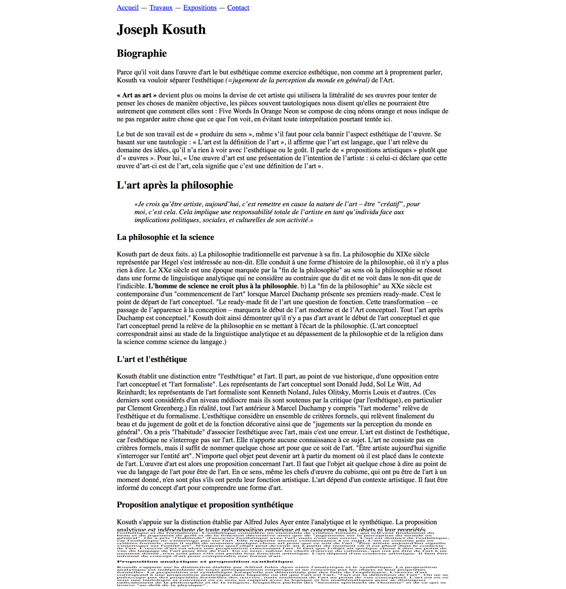
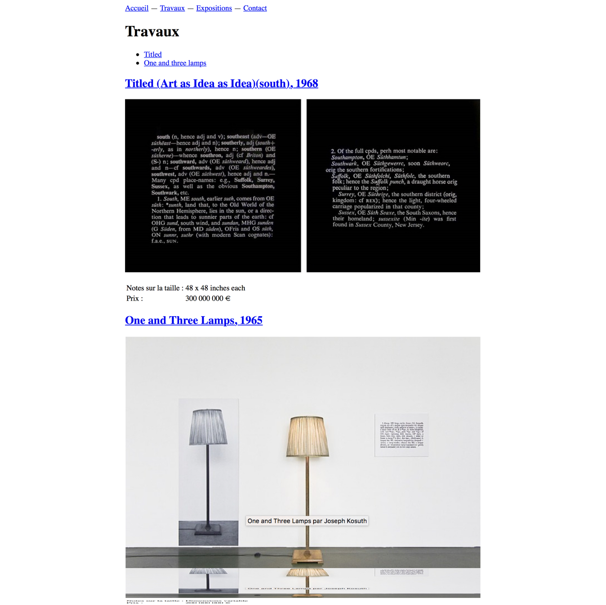
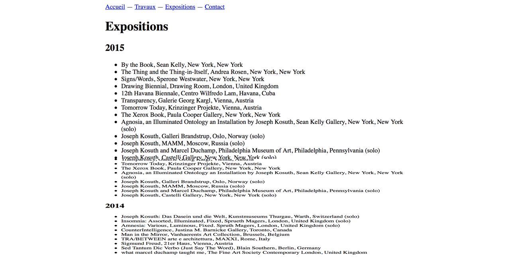
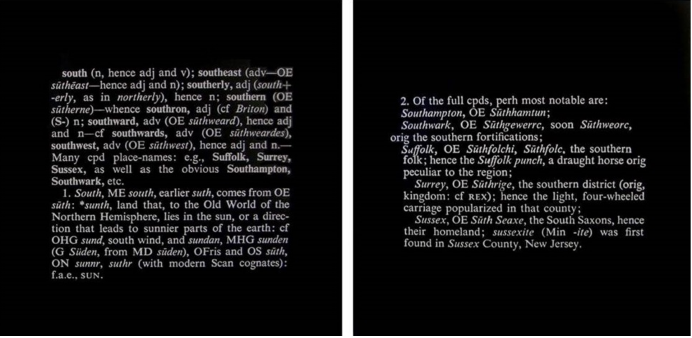

Last modified: Thu Apr 19 2018 22:27:02 GMT+0200 (CEST)
Examen intermédiaire
Récréer une page html structurée selon un modèle
- Reprendre un maximum d’éléments html possible.
- Inclure la feuille de style déjà préparée Enregistrer-sous.
- Le lien "mail" de la page contact doit pointer vers une adresse email. Le téléphone vers un numéro de téléphone.
- La navigation secondaire page 2 doit contenir des ancres
- Ce travail est à réaliser seul(e)
- Le tout doit être transféré via FTP sur votre serveur et accessible via une adresse de type: votrenomdutilisateur.000webhostapp.com/exo4/
Critères d’évaluation:
- Capacité d’identifier les éléments graphique et de les traduire en html (tag ad-hoc)
- Validité du code général
- Quantité d’éléments convertis par rapport au document original ?
1. Les pages
1.1. page01

1.2. page02

1.3. page03

1.4. page04
2. Textes
2.1. Page 1
Joseph Kosuth
Biographie
Parce qu'il voit dans l'œuvre d'art le but esthétique comme exercice esthétique, non comme art à proprement parler, Kosuth va vouloir séparer l'esthétique (=jugement de la perception du monde en général) de l'Art.
« Art as art » devient plus ou moins la devise de cet artiste qui utilisera la littéralité de ses œuvres pour tenter de penser les choses de manière objective, les pièces souvent tautologiques nous disent qu'elles ne pourraient être autrement que comment elles sont : Five Words In Orange Neon se compose de cinq néons orange et nous indique de ne pas regarder autre chose que ce que l'on voit, en évitant toute interprétation pourtant tentée ici.
Le but de son travail est de « produire du sens », même s’il faut pour cela bannir l’aspect esthétique de l’œuvre. Se basant sur une tautologie : « L’art est la définition de l’art », il affirme que l’art est langage, que l’art relève du domaine des idées, qu’il n’a rien à voir avec l’esthétique ou le goût. Il parle de « propositions artistiques » plutôt que d’« œuvres ». Pour lui, « Une œuvre d’art est une présentation de l’intention de l’artiste : si celui-ci déclare que cette œuvre d’art-ci est de l’art, cela signifie que c’est une définition de l’art ».
L'art après la philosophie
«Je crois qu’être artiste, aujourd’hui, c’est remettre en cause la nature de l’art – être “créatif”, pour moi, c’est cela. Cela implique une responsabilité totale de l’artiste en tant qu’individu face aux implications politiques, sociales, et culturelles de son activité.» La philosophie et la science
Kosuth part de deux faits. a) La philosophie traditionnelle est parvenue à sa fin. La philosophie du XIXe siècle représentée par Hegel s'est intéressée au non-dit. Elle conduit à une forme d'histoire de la philosophie, où il n'y a plus rien à dire. Le XXe siècle est une époque marquée par la "fin de la philosophie" au sens où la philosophie se résout dans une forme de linguistique analytique qui ne considère au contraire que du dit et ne voit dans le non-dit que de l'indicible. L'homme de science ne croit plus à la philosophie. b) La "fin de la philosophie" au XXe siècle est contemporaine d'un "commencement de l'art" lorsque Marcel Duchamp présente ses premiers ready-made. C'est le point de départ de l'art conceptuel. "Le ready-made fit de l’art une question de fonction. Cette transformation – ce passage de l’apparence à la conception – marquera le début de l’art moderne et de l’Art conceptuel. Tout l’art après Duchamp est conceptuel." Kosuth doit ainsi démontrer qu'il n'y a pas d'art avant le début de l'art conceptuel et que l'art conceptuel prend la relève de la philosophie en se mettant à l'écart de la philosophie. (L'art conceptuel correspondrait ainsi au stade de la linguistique analytique et au dépassement de la philosophie et de la religion dans la science comme science du langage.)
L'art et l'esthétique
Kosuth établit une distinction entre "l'esthétique" et l'art. Il part, au point de vue historique, d'une opposition entre l'art conceptuel et "l'art formaliste". Les représentants de l'art conceptuel sont Donald Judd, Sol Le Witt, Ad Reinhardt; les représentants de l'art formaliste sont Kenneth Noland, Jules Olitsky, Morris Louis et d'autres. (Ces derniers sont considérés d'un niveau médiocre mais ils sont soutenus par la critique (par l'esthétique), en particulier par Clement Greenberg.) En réalité, tout l'art antérieur à Marcel Duchamp y compris "l'art moderne" relève de l'esthétique et du formalisme. L'esthétique considère un ensemble de critères formels, qui relèvent finalement du beau et du jugement de goût et de la fonction décorative ainsi que de "jugements sur la perception du monde en général". On a pris "l'habitude" d'associer l'esthétique avec l'art, mais c'est une erreur. L'art est distinct de l'esthétique, car l'esthétique ne s'interroge pas sur l'art. Elle n'apporte aucune connaissance à ce sujet. L'art ne consiste pas en critères formels, mais il suffit de nommer quelque chose art pour que ce soit de l'art. "Être artiste aujourd'hui signifie s'interroger sur l'entité art". N'importe quel objet peut devenir art à partir du moment où il est placé dans le contexte de l'art. L'œuvre d'art est alors une proposition concernant l'art. Il faut que l'objet ait quelque chose à dire au point de vue du langage de l'art pour être de l'art. En ce sens, même les chefs d'œuvre du cubisme, qui ont pu être de l'art à un moment donné, n'en sont plus s'ils ont perdu leur fonction artistique. L'art dépend d'un contexte artistique. Il faut être informé du concept d'art pour comprendre une forme d'art.
Proposition analytique et proposition synthétique
Kosuth s'appuie sur la distinction établie par Alfred Jules Ayer entre l'analytique et le synthétique. La proposition analytique est indépendante de toute présupposition empirique et ne concerne pas les objets ni leur propriétés formelles. La proposition est synthétique lorsqu'elle est déterminée par des faits de l'expérience. L'œuvre d'art correspond à une proposition analytique dans laquelle on dit que l'art est l'art, "l'art est la définition de l'art". On ne se préoccupe pas des propriétés formelles des œuvres, mais seulement de l'art au point de vue conceptuel. L'art est en ce sens une tautologie et entretient en ce sens un rapport avec la logique et les mathématiques pour se distinguer radicalement de la philosophie et de la religion, lesquelles parlent des "besoins spirituels de l'homme" et de ce qui se trouve "au-delà de la physique".
2.2. Page 2
Travaux
Titled One and three lamps Titled (Art as Idea as Idea)(south), 1968
Titled
Notes sur la taille : 48 x 48 inches each Prix : 300 000 000 € One and Three Lamps, 1965
One and three lamps
Notes sur la taille : Dimensions variable Prix : 200 000 000 €
2.3. Page 3
Expositions
2015
By the Book, Sean Kelly, New York, New York The Thing and the Thing-in-Itself, Andrea Rosen, New York, New York Signs/Words, Sperone Westwater, New York, New York Drawing Biennial, Drawing Room, London, United Kingdom 12th Havana Biennale, Centro Wilfredo Lam, Havana, Cuba Transparency, Galerie Georg Kargl, Vienna, Austria Tomorrow Today, Krinzinger Projekte, Vienna, Austria The Xerox Book, Paula Cooper Gallery, New York, New York Agnosia, an Illuminated Ontology an Installation by Joseph Kosuth, Sean Kelly Gallery, New York, New York (solo) Joseph Kosuth, Galleri Brandstrup, Oslo, Norway (solo) Joseph Kosuth, MAMM, Moscow, Russia (solo) Joseph Kosuth and Marcel Duchamp, Philadelphia Museum of Art, Philadelphia, Pennsylvania (solo) Joseph Kosuth, Castelli Gallery, New York, New York (solo) 2014
Joseph Kosuth: Das Dasein und die Welt, Kunstmuseums Thurgau, Warth, Switzerland (solo) Insomnia: Assorted, Illuminated, Fixed, Sprueth Magers, London, United Kingdom (solo) Amnesia: Various, Luminous, Fixed. Spruth Magers, London, United Kingdom (solo) CounterIntelligence, Justina M. Barnicke Gallery, Toronto, Canada Man in the Mirror, Vanhaerents Art Collection, Brussels, Belgium TRA/BETWEEN arte e architettura, MAXXI, Rome, Italy Sigmund Freud, 21er Haus, Vienna, Austria Sed Tantum Dic Verbo (Just Say The Word), Blain Southern, Berlin, Germany what marcel duchamp taught me, The Fine Art Society Contemporary London, United Kingdom
2.4. Page 4
Contact
Par mail
kosuth@gmail.com Par Téléphone
+32 405 93 84
3. Images
